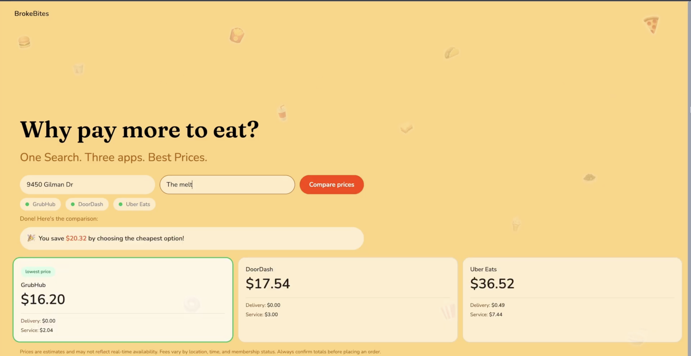

Broke Bites
One search for estimated delivery prices across three apps.

Problem and customer
Budget-conscious diners have to repeat the same search across delivery apps to find the lowest total. With service and delivery fees shown in different places, comparing the real cost of an order takes extra work.
Early ideas
We worked from the separate searches a diner would make in DoorDash, Uber Eats, and Grubhub. We tried running the searches sequentially and then switched to querying the three platforms in parallel so one slow service wouldn't hold up the others.
Design decisions
- We looked at the cost breakdown each app presents and chose to lead with the estimated total, because that's the first number someone needs to compare. We kept delivery and service fees visible underneath.
- We tried a thin green border on the lowest-price card, then chose a thicker border and kept the lowest-price label so diners could spot the cheapest estimate and still compare the other offers.
Validation
While building the prototype, we found that providers returned inconsistent pricing data. We standardized the fields so the cards could show comparable totals and fees. The project materials do not document formal user testing.
Final design
Enter a delivery location and a restaurant or food query, then select Compare prices. The results show the estimated savings and each app's total. The fee breakdown helps explain the price difference, and the checkout reminder tells diners to confirm the final total before ordering.
Outcome and next steps
We built and submitted a working prototype at DiamondHacks 2026. Next, I'd ask diners to compare a real order using the prototype and their usual apps, then check whether they spot the cheapest estimate and understand why the checkout total may change.